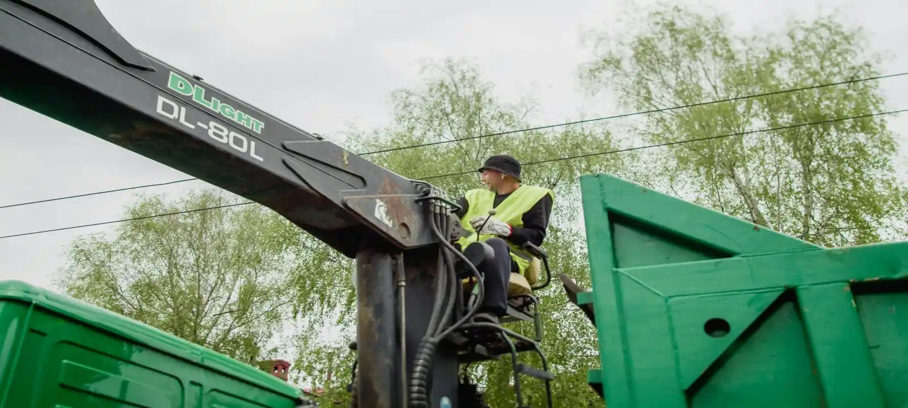
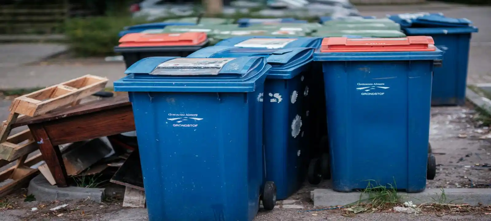

Skip Bin Services We Provide In Wollongong
Mini Skip Bins
Mini skip bins are ideal for small household cleanups, garage cleanouts, garden waste, and minor renovation projects. These smaller bins are popular for residential properties where space is limited and large bins are unnecessary.
Domestic Skip Bins
Domestic skip bins are commonly used during home renovations, moving house, furniture disposal, and general household rubbish removal. They provide a simple way to manage large amounts of waste without multiple trips to the landfill.
Green Waste Skip Bins
Green waste skip bins are designed for garden cleanups, landscaping projects, tree branches, grass, leaves, and outdoor waste removal. Separating green waste also helps reduce disposal costs and improves recycling efficiency.
Construction Skip Bins
Construction skip bins are suitable for renovation debris, concrete, timber, bricks, plasterboard, and demolition materials. These bins help keep construction sites clean, organised, and safer throughout the project.
Commercial & Industrial Skip Bins
Commercial and industrial skip bins are commonly used by businesses, warehouses, factories, and large-scale projects that generate ongoing waste. We provide larger bin sizes and flexible collection options for commercial waste management.
Skip Bin Sizes Available
We provide 2m³, 3m³, 4m³, 5m³, 6m³, 8m³, 10m³, and 12m³ skip bins across Wollongong for different project sizes and waste volumes. Smaller bins are suitable for light household waste and garden cleanups, while larger bins are better for renovations, commercial waste, and construction debris. Choosing the correct size helps avoid overfilling, unnecessary costs, and additional collections.
When You May Need
Skip bins are commonly needed during home renovations, landscaping projects, moving house, office cleanouts, construction work, and large property cleanups. Waste can quickly accumulate during these projects, creating safety risks, clutter, and unnecessary delays. A properly sized skip bin provides a more efficient way to manage rubbish while keeping the site clean and organised.
What Affects Skip Bin Hire Prices
Skip bin prices in Wollongong usually depend on bin size, waste type, hire duration, delivery location, and disposal requirements. Green waste is generally cheaper to process than mixed waste, construction materials, or industrial waste. Choosing the wrong skip bin size or waste category may also lead to additional disposal charges or replacement costs.
Why 1000+ Customers Choose Us
Many customers are unsure which skip bin size or waste type is best for their project, especially during renovations, cleanups, or construction work where waste volume can quickly increase. Choosing the wrong bin can lead to unnecessary costs, overflow issues, or additional collections later. Our team helps customers understand their options and recommends the most suitable skip bin solution based on the type of project, amount of waste, and site conditions, making the entire process simpler, more efficient, and less cost.

Frequently Asked Questions
How much does skip bin hire cost in Wollongong?
Skip bin costs vary depending on the bin size, waste type, and hire duration. Smaller bins are generally more affordable, while construction and mixed waste bins may cost more due to disposal requirements.
What size skip bin do I need?
We offer skip bins from 2m³ to 12m³ for different types of projects. Smaller bins are ideal for household cleanups and green waste, while larger bins are better for renovations and construction work.
Can I mix green waste and construction waste together?
Some skip bins allow mixed waste, while others are designed for specific waste categories such as green waste or construction debris. We help customers choose the correct option before booking.
What happens if I choose the wrong skip bin size?
Choosing a bin that is too small can lead to overflow problems or additional hire costs. Our team helps estimate the correct size based on your project and waste volume.
Do you provide same-day skip bin delivery in Wollongong?
In many cases, yes. Same-day or fast delivery may be available depending on bin availability and your location within Wollongong.